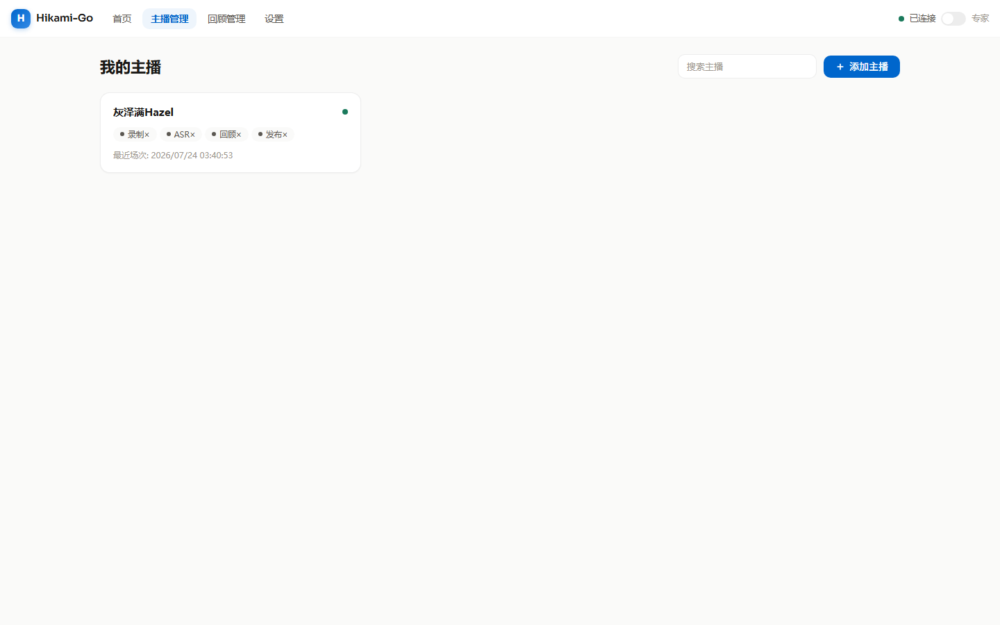
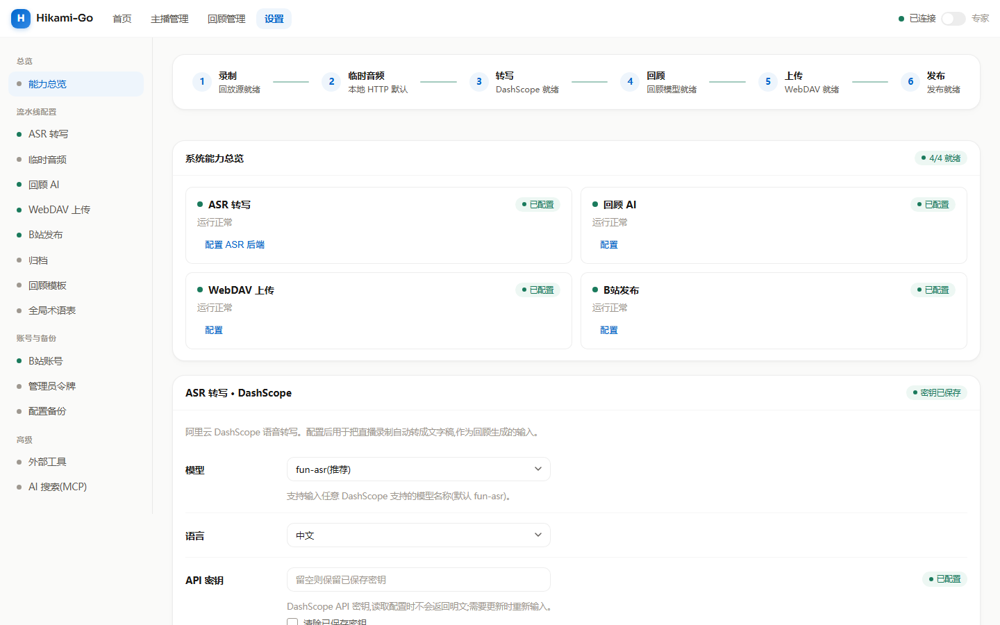
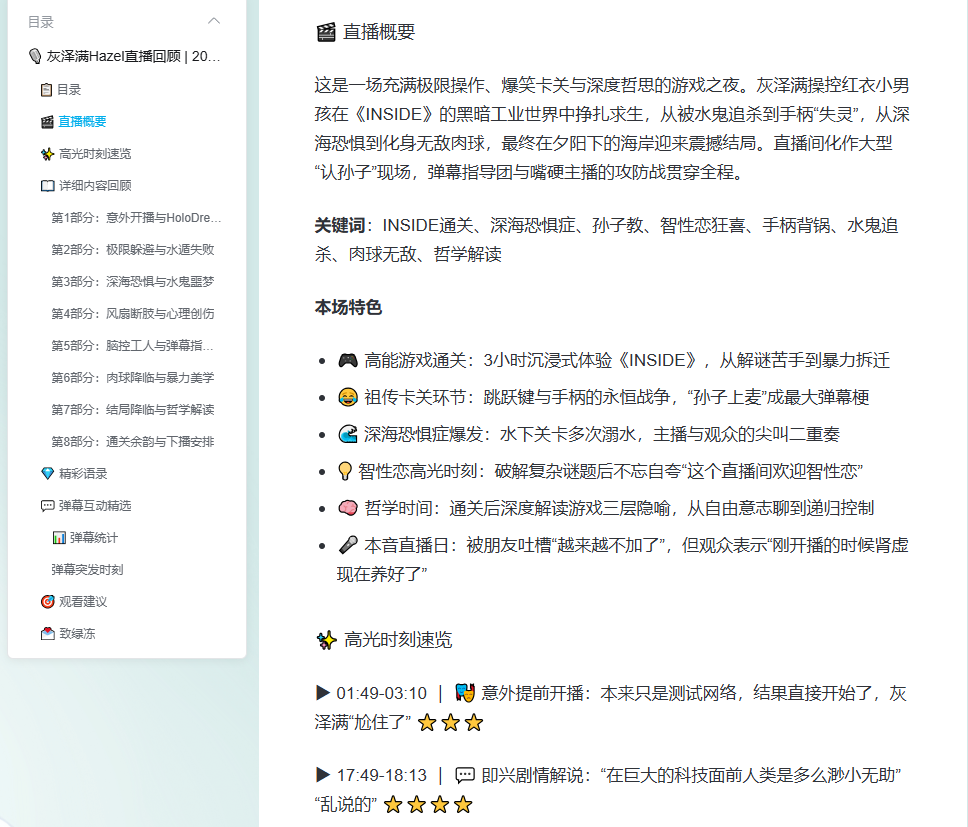

界面预览
打开网页就能用,不用碰命令行
所有操作都在一个清爽的后台界面里完成。选中一场直播,点按钮一步步往下走,全程实时进度。




直播音频录播 → ASR 语音转文字 → AI 直播回顾生成 → B 站专栏投稿 → WebDAV 文件存档,全流程一条龙。
帮你不错过主播的精彩内容;也能当作直播切片的辅助工具,快速定位精彩时刻。

不用手动剪辑、不用手写回顾、不用多个软件来回倒腾。下面这些事,你配好一次,以后全自动。
直播一开始就自动录音频和弹幕。错过直播也不怕 —— 支持断线重连、风控冷却、0 字节僵尸分段自动收尾。主播下播后自动进入转写流程,你什么都不用做。
结合弹幕氛围,AI 自动写出一篇结构完整的直播回顾:概要 / 高光时刻 / 详细内容 / 精彩语录 / 观看建议。配好模型,点一下就能生成,直接发或编辑后发都行。
自动发现并下载 B 站回放,单 P / 多 P 都行。
录音自动转成带时间轴字幕,先剪静音省费用。
写回顾时 AI 自己上网核实术语、人名、事件。
每个主播单独维护术语表,转写不再转错字。
点一下发到 B 站专栏,支持草稿、封面、文集。
录音自动归档 WebDAV 网盘,不占本地空间。
所有操作都在一个清爽的后台界面里完成。选中一场直播,点按钮一步步往下走,全程实时进度。


配好之后,从直播结束到专栏发布,你只需要看着进度条往前走。
自动录制直播,或下载、导入已有的回放音频
→AI 把录音转成带时间轴的字幕,顺手剪掉静音
→结合弹幕,生成结构完整的回顾文章
→一键发布到 B 站专栏,录音自动归档网盘
Windows 用户直接下载 exe,双击运行,无需命令行。Linux / 命令行用户请见下方源码编译。
自己电脑日常挂着录直播。双击运行,托盘图标 + 无黑窗,自带 ffmpeg,开箱即用。
同上,但你的机器已经装好了 ffmpeg。比推荐版少 3M,其余完全一样。
服务器 / 后台跑、命令行操作。普通控制台程序,自带 ffmpeg,日志打 stdout。
同上,但服务器已装 ffmpeg。最精简的控制台版本。
需要 Go 1.25+、Node 20+(构建前端)、ffmpeg / ffprobe(运行时调用)。
# 拉取源码
git clone https://github.com/lililixxx1/hikami-go.git
cd hikami-go
# 构建前端 + 编译(完整产物,内嵌前端)
make build
# Linux 交叉编译
make build-linux-amd64
# 配置并启动
cp config.example.yaml config.yaml
# 编辑 config.yaml,至少填 output_root(录播存哪)
make run启动后浏览器打开 http://127.0.0.1:6334 即管理界面。详细说明见 README。